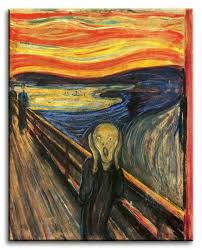

Nauczanie zdalne
Klasa 8A
wychowawca Beata Klimowicz
Piątek 8.05.2020r
JĘZYK ANGIELSKI -grupa 1i 2
Przepisz temat do zeszytu.
Topic: – Did you visit your uncle? (Past Simple) – Czy ty odwiedziłeś swojego wujka? (przeszły czas prosty czasowników)
Już wiemy, jak zmieniają się czasowniki regularne w czasie przeszłym i jak utworzyć pytanie i przeczenie.
Zadanie 1 Zmień zdania twierdzące na zdania przeczące według przykładu.
Przykład:
Peter arrived home at five o’clock. Piotr przyjechał do domu o godz. 5.00.
Peter didn’t arrive home at five o’clock. Piotr nie przyjechał do domu o godz. 5.00.
1) John played football yesterday. ……………………………………….
2) Magda visited her friend last Sunday. ………………………………..
3) My father worked at school last year. …………………………………
4) I watched TV last night. ……………………………………
5) Dad washed the dog. ………………………………….
Zadanie 2 Przetłumacz pytania i odpowiedz na nie według przykładu.
Przykład:
Did you listen to music in the afternoon? Czy ty słuchałeś muzyki po południu?
Yes, I, did.
Did you live in Nysa in 2015? .........................................
Did you cook dinner yesterday? ………………………….
Did you visit your friends last week? ……………………..
Did you walk in the mountains last summer? ………………….
USPRAWNIANIE TECHNIK SZKOLNYCH- MATEMATYKA -1 lekcja (Amelka, Klaudia, Patryk), 2 lekcja (Alan, Wanessa, Szymon)
Zadania robią wszyscy uczniowie, gdyż podzieleni są na grupy. Dwa razy rewalidacje ma Alan i Łukasz- dlatego robią dodatkowo-rodzaje kątów , rysunki i miary / wszystkie poznane- nie tylko podstawowe/.
1. Określ rodzaj kąta
46 stopni - kąt........................................ 90 stopni - kąt..................................
180 stopni- kąt.......................................0 stopni - kąt ....................................
225 stopni- kąt.......................................
2. Określ kąt L w kącie półpełnym , wiedząc, że :
a/ kąt B= 55 kąt L =.............. d/ kąt B=125 kąt L = ..............
b/ kąt B = 72 kąt L = ........... e/ kąt B = 168 kąt L=..............
c/kąt B = 110 kąt L= ............ f/ kąt B=37 kąt L= ............
3.Nauka -rodzaje kątów.
Przyjemnego liczenia p. Zosia.
USPRAWNIANIE TECHNIK SZKOLNYCH – JĘZYK POLSKI (Łukasz, Alan , Wanessa, Szymon)
- Napisz, jak się czujesz? Dlaczego tak możesz się czuć ?
- Odpowiedz na pytania, sprawdź siebie :
- Co to znaczy cywilizować ?
- uciekać w głąb wyspy
- śmiać się
- bać się
- wprowadzać w nowości z różnych dziedzin życia
- Co szukamy w słowniku poprawnej polszczyzny?
- sprawdzamy poprawną pisownię wyrazu
- szukamy wyrazów o podobnym znaczeniu
- nie wiem
- sprawdzamy poprawną formę wyrazu
- Dlaczego wyraz ,,wyróżnienie" piszemy przez ,,ż"
- nie wiem
- żadna z tych odpowiedzi nie jest prawidłowa
- ano bo to chyba jest niewymienne
- bo piszemy w cząstkach -róż- ż
- Co oznacza ,,mówić bez ładu i składu" :
- nie brać odpowiedzialności za swoje słowa
- mówić cicho i niewyraźnie
- mówić byle co , co przyjdzie na myśl
- zacząć działać natychmiast
Czekam na WASZE odpowiedzi - POZDRAWIAM ))
LOGOPEDIA ( Daniel, Karol)
Ćwiczenia oddechowe:
nabierz powietrza przez nos, wypuść przez nos,
nabierz powietrza prze nos, zatrzymaj na chwilę, wypuść przez nos,
nabierz powietrza przez nos, wypuść przez usta mówiąc jednocześnie /zzzzzzz/
Ćwiczenia usprawniające narządy mowy (każde ćwiczenie wykonaj 5 razy):
szeroko otwieraj i zamykaj usta, ziewaj,
podnieś język, oprzyj go na górnych dziąsłach, uderzaj językiem o podniebienie (kląskanie),
zaciśnij wargi i wysuń do przodu, następnie uśmiechnij się
Ćwiczenia słuchowe:
usiądź, zamknij oczy i nazwij najcichszy i najgłośniejszy dźwięk, który słyszysz
Przeczytaj wiersz zwracając uwagę na prawidłową wymowę:
Szklarz
Wyleciały szyby z okien,
szklarz popatrzył jednym okiem.
Nowe szyby wstawił szybko.
Możesz usiąść znów za szybką!
SOCJOTERAPIA (MATEUSZ)
Temat: Wychowanie
Proces wychowania człowieka rozpoczyna się już w łonie matki, kiedy to mama głaszcze swoje dziecko poruszające się i w wodach płodowych, dając mu poczucie miłości i akceptacji. Z czasem dziecko stając się starsze nabiera nowych nawyków, uczy się nowych form zachowania, kształtuje się jego światopogląd, na który największy wpływ ma najbliższa rodzina. To w jakiej formie nasi rodzice przekazują nam te wartości będzie miało wpływ na to jakimi ludźmi będziemy w przyszłości. Ten proces możemy nazwać wychowaniem. Zastanów się czy wychowanie człowieka jest proste, i jak długo trwa? Czy kończy się w wieku 18 lat, czy może trwa dłużej? A może trwa całe życie? Jakie wartości warto przekazywać swoim dzieciom? Jakie wartości przekazują ci rodzice?
Porozmawiaj o tym z rodzicami.
MATEMATYKA
Powtórzenie-pole powierzchni i objętość graniastosłupa.
1. Oblicz pole i objętość :
a/prostopadłościanu o wymiarach a=10cm b= 2cm c= 4cm
b/sześcianu o wymiarach a= 8cm
2.Ile soku możemy wlać do pojemnika w kształcie sześcianu o wymiarach a=12dm?
3.Ile oleju z oliwek możemy wlać do kartonu w kształcie prostopadłościanu o wymiarach a= 20dm, b=10dm, c=80dm?
4. Pole powierzchni graniastosłupa prawidłowego trójkątnego, w którym krawędź podstawy ma 3cm a wysokość ma 5cm, wynosi ? Dokonaj obliczeń.
Rozwiązane zadania do 12.05.2020
JĘZYK POLSKI
Temat: Z czego wynika i czego dotyczy krzyk na obrazie Edvarda Muncha ?

Notatka:
Obraz norweskiego malarza, Edvarda Muncha „Krzyk” powstał w 1893 roku. Przedstawia on krzyczącą postać, prawdopodobnie samego malarza.
Osoba na pierwszym planie stoi na moście. Nie wiemy kim ona jest: kobietą, mężczyzną, dzieckiem . Jej głowa wydaje się za duża w stosunku do szczupłej sylwetki i zbyt ciężka dla podtrzymujących ją rąk. Ma na sobie ciemny strój, co tworzy wyrazisty kontrast z jasną barwą ciała. Twarz wyraża przerażenie: usta są otwarte do krzyku. Za sobą ma dwa cienie: ścigających czy tylko światków? Przestrzeń wokół wywołuje wrażenie niepokoju i lęku. Most nie ma początku ani końca. Tłem sytuacji jest morze lub zatoka w kolorach czerni, szarości i jadowitej żółci. Uzupełnieniem całej sceny jest pomarańczowo-żółte niebo charakterystyczne dla zachodu słońca. Opisywany obraz budzi w widzu grozę. Sprawiają to między innymi wyraziste, wijące się linie oraz niezwykle jaskrawe i kontrastujące ze sobą barwy. Potęgują one jeszcze przerażenie, jakie możemy ujrzeć na twarzy głównej postaci. Odważne użycie koloru przez artystę ma na celu wzmocnienie ładunku emocjonalnego, jaki niesie ze sobą dzieło. Wzrok przykuwa również obojętność postaci na drugim planie, które zachowują się tak, jakby nie dostrzegały krzyczącego mężczyzny.
„Krzyk” jest odzwierciedleniem uczuć Muncha. Autor był najwidoczniej przerażony światem. Bał się samotności i obojętności innych ludzi. Wiele źródeł podaje, iż czuł on głębokie lęki związane z alienacją współczesnego człowieka. Malując swój obraz przelał on na płótno swoją duszę, swoje odczucia.
Edvard Munch był jednym z pierwszych, a zarazem najlepiej znanych ekspresjonistów. Omawiany przez mnie obraz jest jednym z najlepszych i najbardziej wyrazistych dzieł ekspresjonizmu. Wskazują na to przede wszystkim krzykliwe kolory, silnie zdeformowane kształty oraz, co jest najbardziej charakterystyczne dla tego gatunku, przesłanie psychologiczne widoczne już na pierwszy rzut oka.
WOS
Temat: Organizacje międzynarodowe.
- Pakt Północnoatlantycki – NATO
Proszę obejrzeć film: https://www.youtube.com/watch?v=iTo9f-TbrLk
W 1949r. dziesięć krajów zachodnioeuropejskich oraz Kanada i USA podpisały traktat o utworzeniu Organizacji Paktu Północnoatlantyckiego (NATO). Państwa należące do tego sojuszu polityczno-wojskowego zobowiązały się do wzajemnej obrony przed ewentualnym atakiem ze strony innych krajów.
Inne ugrupowania międzynarodowe, do których należy Polska:
- Rada Europy
Do jej celów należy umacnianie demokracji, ochrona praw człowieka i rozwiązywanie problemów społecznych.
- Grupa Wyszehradzka
Jej celem jest rozwijanie wszechstronnej współpracy między państwami członkowskimi (m.in. wypracowywanie wspólnego stanowiska w sprawach ważnych dla regionu i całej Europy).
- Rada Państw Morza Bałtyckiego
Celem tej organizacji jest współpraca krajów członkowskich w sprawach związanych z ochroną środowiska, gospodarką, edukacją i kulturą.
EDUKACJA DLA BEZPIECZEŃSTWA
Temat: Urazy termiczne czyli oparzenia.
Jak leczyć oparzenia? Kiedy poparzenie zagraża zdrowiu i życiu? Sprawdź co robić, aby sobie pomóc, a nie zaszkodzić.
Oparzenia – pierwsza pomoc
Oparzenia to uszkodzenie skóry w wyniku działania wysokiej temperatury, prądu lub substancji chemicznych. Do oparzenia skóry może dojść już przy temperaturze 42°C.
Obejrzyjcie poniższy film instruktażowy:
https://www.youtube.com/watch?v=nHpIJ_C1i7c
Napiszcie w zeszycie:
- Stopnie oparzeń i ich objawy.
- Sposób udzielania pierwszej pomocy przy oparzeniach.
https://www.youtube.com/watch?v=yHA9x6rVb80
https://www.youtube.com/watch?v=RljtUiMsUYU
https://www.youtube.com/watch?v=MqXzommAuIs
FIZYKA
Temat : Otrzymywanie obrazów w zwierciadle kulistym.
zad .1.
Narysuj konstrukcje powstawania obrazu w zwierciadle kulistym wklęsłym dla :
- :x > 2f
- x = 2f
- x = f
- x < f
Posłuż się przykładami z filmów
https://www.youtube.com/watch?v=u-reinbibYk&t=653s
https://vod.tvp.pl/video/szkola-z-tvp-klasa-8,fizyka-lekcja-6-20042020,47623946
zapisz do zeszytu:
Obraz powstający w odbiciu od zwierciadła wklęsłego gdy przedmiot umieszczony jest
- w odległości większej od podwójnej ogniskowej jest: rzeczywisty, odwrócony i pomniejszony
- w odległości równej podwójnej ogniskowej jest: rzeczywisty, odwrócony i takiego samego wymiaru
- w odległości równej ogniskowej nie powstaje.
- w odległości mniejszej od ogniskowej jest: pozorny, prosty i powiększony.
Czwartek 07.05.2020r
WYCHOWANIE FIZYCZNE- CHŁOPCY
Temat: Ćwiczenia motoryczne
Uwagi wstępne:
- ćwiczymy tylko wtedy ,kiedy jesteśmy zdrowi
- ćwiczymy w stroju sportowym, zachowując zasady bezpieczeństwa
- przed ćwiczeniami wietrzymy pokój
-ćwiczenia wykonujemy starannie
- rozpoczynamy od rozgrzewki ( ok.10-15 min.)
Propozycja ćwiczeń na aktywność w domu:
- Marsz w miejscu z wysokim unoszeniem kolan( liczymy do 30)
- Bieg na palcach z piętami uderzającymi o pośladki ( liczymy 30)
- Bieg z naprzemiennym krążeniem ramion, w przód i w tył ( liczymy do 20)
- Pajacyki ( 2x10 powtórzeń)
- Powstanie z leżenia tyłem na plecach, ramiona wzdłuż tułowia - 10x
- Skłony z pogłębianiem (siad prosty, nogi w lekkim rozkroku skłon raz wzdłuż
prawej, raz lewej nogi) - po 5x
- Rowerek ( leżenie tyłem, ramiona wzdłuż tułowia ) ok.30 sek.
8.Ćwiczenia oddechowe - w pozycji stojącej ,)skłony w przód (wydech)
Wyprost ,ramiona w górę ( wdech) -powtórz 7 razy
Każdą serię powtarzamy 2 razy ,przerwa pomiędzy seriami ok. 10 minut.
Dziękuję za wkład pracy.
ZAJĘCIA POZALEKCYJNE – DYREKTORSKIE – ARTYSTYCZNE (Wanessa) 2h
Temat: Obraz mojego imienia.
Zadanie.
Otrzymałaś piękne imię, pomyśl z czym kojarzy ci się twoje imię.
Narysuj to skojarzenie na kartce z bloku rysunkowego w takim brzmieniu jak lubisz.
Spróbuj napisać co oznacza twoje imię, czy ono ci się podoba ?
Temat: Reklama książki.
Zadanie.
Zareklamuj ulubioną książkę (lub lekturę szkolną) ,wykonaj plakat dowolną techniką.
USPRAWNIANIE TECHNIK SZKOLNYCH – JEZYK POLSKI (Amelia , Klaudia)
- Napisz, jak się czujesz? Dlaczego tak możesz się czuć ?
- Odpowiedz na pytania, sprawdź siebie :
- Co to znaczy cywilizować ?
- uciekać w głąb wyspy
- śmiać się
- bać się
- wprowadzać w nowości z różnych dziedzin życia
- Co szukamy w słowniku poprawnej polszczyzny?
- sprawdzamy poprawną pisownię wyrazu
- szukamy wyrazów o podobnym znaczeniu
- nie wiem
- sprawdzamy poprawną formę wyrazu
- Dlaczego wyraz ,,wyróżnienie" piszemy przez ,,ż"
- nie wiem
- żadna z tych odpowiedzi nie jest prawidłowa
- ano bo to chyba jest niewymienne
- bo piszemy w cząstkach -róż- ż
- Co oznacza ,,mówić bez ładu i składu" :
- nie brać odpowiedzialności za swoje słowa
- mówić cicho i niewyraźnie
- mówić byle co , co przyjdzie na myśl
- zacząć działać natychmiast
Czekam na WASZE odpowiedzi - POZDRAWIAM ))
ZAJECIA POZALEKCYJNE – PLASTYKA ( Amelia, Klaudia)
OBEJRZYJ uważnie krótki film :
https://www.youtube.com/watch?v=ajPnqLqvqqM
wykonaj według przykładu zakładkę origami.
Zdjęcie pracy możecie przesłać na adres
beata.chmiel20@wp.pl
JĘZYK ANGIELSKI grupa 1 i 2
Przepisz temat do zeszytu.
Topic: – I didn’t stay in a hotel. – Nie przebywaliśmy w hotelu
Zadanie 1 Przeczytaj tekst i przetłumacz go na język polski.
Wyszukaj czasowników w czasie przeszłym i podkreśl je.
Słowniczek: busy [bizy] - zajęty
arrive [erajw] – przybyć, przyjechać
next - następnie, potem
talk [tok] – rozmawiać, pogadać
about [ebaut] – o (czymś, kimś)
ask a lot of questions [esk e lotow kłeszczenz] –zadać dużo pytań
Magda was very busy yesterday, In the morning she visited her grandparents. When she arrived home, she finished her homework.
Next she phoned her friend Kate. They talked about last holidays.
Kate was in France in July. Magda asked Kate a lot of questions.
A teraz zobaczymy, jak zadawać pytania i utworzyć przeczenie w czasie przeszłym.
- W pytaniu pojawia się:
forma „did” + forma podstawowa czasownika
Np.: Did you read ....? Czy ty czytałeś ...?
Krótka odpowiedź na te pytania brzmi: Yes, I did. –Tak (ja czytałem).
No, I didn’t. Nie (ja nie czytałem).
- W przeczeniu stosujemy „did not = didn’t” + czasownik w
podstawowej formie
np.: She didn’t watch TV … - Ona nie oglądała telewizji...
Zadanie 2 Napisz przykłady do zeszytu.
Pytania:
1. Did you play computer games yesterday?
Czy ty grałeś w gry komputerowe wczoraj?
2 Did he visit his grandmother last week?
Czy on odwiedził swoja babcię w zeszłym tygodniu?
3 Did she watch TV yesterday?
Czy ona oglądała telewizję wczoraj?
Przeczenie:
1 I didn’t play tennis on Monday.
Ja nie grałem w tenisa w poniedziałek
2 He didn’t dance last Saturday.
On nie tańczył w zeszłą sobotę.
3 They didn’t live in Warsaw in 1995.
Oni nie mieszkali w Warszawie w 1995r.
INFORMATYKA
Temat Zastosowanie arkusza kalkulacyjnego
- Otwórz podręcznik online https://ebook.migra.pl/dlaucznia.php?book=68
Zapoznaj się z materiałem str 202 Geografia – przygotowanie referatu o województwach w Polsce.
- Wykonaj Ćwiczenie 5 str. 202
- Plik zapisz i prześlij go w załączniku na adres:
jakrzemian@gmail.com lub zrób zdjęcie i wyślij na nr telefonu 606857361
Uwaga!
Jeżeli nie masz komputera i pracujesz tylko na telefonie wykonaj następujące polecenie:
- Podaj liczbę województw w Polsce i wymień je.
- Podaj powierzchnię województw w ha
Odpowiedź napisz na kartce, zrób zdjęcie i przyślij mi na mojego e-maila
JĘZYK POLSKI
Temat :Najgorsza jest samotność wśród bliskich…
Zadanie :
Przeczytaj recenzję książki i sporządź krótką notatkę. ( 6 zdań ) Odpowiedz na pytanie: Jak można radzić sobie z samotnością ?
https://nakanapie.pl/recenzje/samotni-pl-samotni-pl
Pozdrawiam!
MATEMATYKA
Temat: Odcinki w ostrosłupach - zadania
Zadania do wykonania:
1. Oblicz wysokość ostrosłupa prawidłowego czworokątnego w którym:
a/ krawędź podstawy ma 4cm, a krawędź boczna ma 6cm,
b/ krawędź podstawy ma 4cm, a krawędź boczna ma10cm
2. W ostrosłupie prawidłowym trójkątnym wysokość podstawy i wysokość ściany bocznej mają odpowiednio 6cm i 7cm. Oblicz wysokość tego ostrosłupa.
3.Wysokość podstawy ma 9,wysokość ściany bocznej ma 11cm w ostrosłupie prawidłowym trójkątnym. Oblicz wysokość tego ostrosłupa.
4. Wykonaj rysunki pomocnicze do zadań.
CHEMIA
Temat: Białka
Dzisiaj poznamy reakcje charakterystyczne białek oraz reakcje białek z różnymi substancjami.
Oglądnij filmik https://www.youtube.com/watch?v=3f0GrTdWyrQ
Jak reaguje białko z wodorotlenkiem miedzi?
Jak reaguje białko z kwasem azotowym?
Jak reaguje białko w wysokiej temperaturze?
Jak reaguje białko z chlorkiem sodu?
Jak reaguje białko z alkoholem etylowym?
Czym się różni denaturacja od kogulacji?
Wykonaj doświadczenie ( pod nadzorem rodzica!!!).
Zagotuj wodę. Włóż do gotującej się wody dwa jajka. Jedno wyciągnij po 2 minutach, drugie po pięciu. Opisz jak wyglądało białko w obu jajkach.
ZAJĘCIA WYCHOWAWCZE
Temat: Uczeń- obywatel. Co wiem o życiu w społeczeństwie demokratycznym ?
Witajcie - na dzisiejszej lekcji będziemy mieli przygodę z demokracją.
Słowo obywatel, które w latach słusznie minionych nabrało pejoratywnego zabarwienia, odzyskało pozytywne znaczenie i wiąże się z wyborem, odpowiedzialnością, a także działaniem na rzecz społeczności, które wspólnie tworzymy Co dziś znaczy być obywatelem i jak być świadomym i odpowiedzialnym?
Jedna z propozycji dla was
https://www.glospedagogiczny.pl/artykul/obywatel-wolontariusz
Środa 06.05.2020r
JĘZYK POLSKI
Temat: Czy naprawdę” wszędzie jest tak samo”? Czytamy opowiadanie Marka Hłaski
Zadanie – Przeczytaj życiorys i recenzję opowiadania „Pierwszy krok w chmurach” M. Hłaski
https://zwierciadlo.pl/kultura/marek-hlasko-pisarz-buntownik-i-lamacz-serc
http://aleklasa.pl/liceum/c300-lektury/opowiadania-hlaski
Notatka:
Cytat: „życie nie jest koniecznością, ale jeśli już człowiek zdecydował się żyć, powinien żyć pięknie”
O pisarzu:
„niekiedy wilkiem się nazywał, lecz wilkiem nie był, raczej chciał być
gdy cały naród raźnie śpiewał – wolał zawyć…” (Agnieszka Osiecka)
Napisz parę zdań o pisarzu.
MATEMATYKA
Temat: Odcinki w ostrosłupach-2h
Szukaj:
1. Ostrosłup prawidłowy trójkątny- obliczanie długości Pi-stacja 11.17/wpisujecie do zeszytu zadanie 1,2,3 i zapamiętaj/,
2. Ostrosłup prawidłowy czworokątny i sześciokątny Pi-stacja 11.00 / wpisujecie do zeszytu zadanie 1,2,3 i zapamiętaj/
3. Obrazy dla odcinki w ostrosłupach klasa 8-, oglądamy.
WYCHOWANIE FIZYCZNE- DZIEWCZYNY
Temat :Ćwiczenia z piłkami przygotowujące do gier zespołowych
zostańwdomu#trenuj w domu !!
Potrzebne przybory: piłka, balon, papier toaletowy
Przypominam o zasadach bhp podczas ćwiczeń w domu ,tak jak na lekcjach w-f w szkole. Proszę również pamiętać, że ćwiczymy tylko i wyłącznie jak jesteśmy zdrowi.
Pamiętajmy przed rozpoczęciem ćwiczeń ,aby zrobić 10 minutową rozgrzewkę (ćwiczenia pamiętamy z lekcji)
Proszę dokładnie obejrzeć filmik i spróbować powtórzyć ćwiczenia kilkakrotnie. Ćwiczymy w domu lub na świeżym powietrzu
https://youtu.be/umyjvulRVvw
USPRAWNIANIE TECHNIK SZKOLNYCH -MATEMATYKA 2h
Zadania robią wszyscy uczniowie, gdyż podzieleni są na grupy. Dwa razy rewalidacje ma Alan i Łukasz- dlatego robią dodatkowo-rodzaje kątów , rysunki i miary / wszystkie poznane- nie tylko podstawowe/.
1. Określ rodzaj kąta
46 stopni - kąt........................................ 90 stopni - kąt..................................
180 stopni- kąt.......................................0 stopni - kąt ....................................
225 stopni- kąt.......................................
2. Określ kąt L w kącie półpełnym , wiedząc, że :
a/ kąt B= 55 kąt L =.............. d/ kąt B=125 kąt L = ..............
b/ kąt B = 72 kąt L = ........... e/ kąt B = 168 kąt L=..............
c/kąt B = 110 kąt L= ............ f/ kąt B=37 kąt L= ............
3.Nauka -rodzaje kątów.
Przyjemnego liczenia p. Zosia.
EEG (Szymon)- Zadania dla Szymona przesłane zostały bezpośrednio na adres e-mail.
USPRAWNIANIE TECHNIK SZKOLNYCH- JĘZYK POLSKI 3 lekcja (Mateusz, Patryk, Karol), 4 lekcja (Łukasz, Szymon, Daniel, Patryk)
Opis postaci
Zadanie : Przypomnij sobie jakie elementy musi zawierać opis postaci . Pomoże wam link
https://www.edziecko.pl/Junior/7,160035,25103719,charakterystyka-postaci-plan-elementy-jak-napisac.html
Opisz dowolną postać literacką
CHEMIA
Temat : Białka
Obejrzyj filmik ( do 4 minuty ) https://www.youtube.com/watch?v=2bBGElfdFfs
i odpowiedź na pytania
1. Z czego zbudowane są białka?
2. Czym połączone są aminokwasy (monomery)?
3. Czy białka ulegają denaturacji?
4. Co tworzą białka rozpuszczone w wodzie?
5. Jak dzielimy białka?
Narysuj oś "Liczba reszt aa". Zaznacz na niej oligopeptydy, polipeptydy i białka.
GEOGRAFIA
Temat: Środowisko przyrodnicze Arktyki i Antarktyki cz.1
Obejrzyj krótki film o Antarktydzie a następnie zapisz do zeszytu notatkę;
https://www.youtube.com/watch?v=cAVjq4q_ngM
Koła podbiegunowe północne i południowe są granicami stref oświetlenia Ziemi, a obszary leżące za kołami polarnymi nazywa się strefami zimnymi. Obszar rozciągający się wokół bieguna północnego to Arktyka. Nazwa pochodzi od greckiego słowa arktos oznaczającego 'niedźwiedzia', gdyż kierunek północny wyznaczano, korzystając z gwiazdozbioru Wielkiej Niedźwiedzicy.
Po drugiej stronie kuli ziemskiej na półkuli południowej leży Antarktyka. Obszar ten obejmuje kontynent Antarktydy oraz południowe wody trzech Oceanów. Antarktyda jest najpóźniej odkrytym kontynentem. Arktyka i Antarktyka to najzimniejsze obszary na Ziemi. Najniższą temperaturę powietrza – nie tylko na Antarktydzie, ale w ogóle na Ziemi – zanotowano w stacji Wostok 21 lipca 1983 roku: wynosiła ona –89,2°C. Na Antarktydzie nie mieszkają ludzie. Są tu tylko stacje badawcze.
Wykonaj polecenia:
- Narysuj w zeszycie globus a następnie zaznacz, w którym miejscu jest Arktyka a w którym Antarktyda.
- Narysuj sfery oświetlenia Ziemi - skorzystaj ze strony:
https://epodreczniki.pl/a/strefy-oswietlenia-ziemi/DTnHqcFPt
HISTORIA
TEMAT: Stan wojenny w Polsce
Obejrzyj film: https://www.youtube.com/watch?v=KqLZAFG3Fdk
Zapisz do zeszytu:
37 lat temu, w niedzielę 13 grudnia 1981 r. o godz. 6 rano, Polskie Radio nadało wystąpienie gen. Wojciecha Jaruzelskiego, w którym informował on Polaków o wprowadzeniu na mocy dekretu Rady Państwa stanu wojennego na terenie całego kraju.
Władze komunistyczne rozpoczęły zatrzymywanie działaczy opozycji i "Solidarności", zajęły obiekty Polskiego Radia i Telewizji oraz zablokowały w centrach telekomunikacyjnych połączenia krajowe i zagraniczne. W ciągu kilku dni umieszczono około 5 tys. osób. Jeszcze przed północą jednostki MSW, składające się z grup specjalnych, oddziałów ZOMO, jednostek antyterrorystycznych, funkcjonariuszy SB, oddziałów Jednostek Nadwiślańskich przy wsparciu wojska rozpoczęły działania.
Wprowadzono godzinę milicyjną od godz. 22 do godz. 6 rano, a na wyjazdy poza miejsce zamieszkania potrzebna była przepustka. Korespondencja podlegała oficjalnej cenzurze, wyłączono telefony, uniemożliwiając między innymi wzywanie pogotowia ratunkowego i straży pożarnej. 31 grudnia 1982 r. stan wojenny został zawieszony, a 22 lipca 1983 r. odwołany, przy zachowaniu części represyjnego ustawodawstwa. Dokładna liczba osób, które w wyniku wprowadzenia stanu wojennego poniosły śmierć, nie jest znana.
RELIGIA
Temat: „Powołanie do życia w samotności”
Proszę, obejrzyjcie ten filmik i … odpocznijcie nieco:)
https://www.youtube.com/watch?v=YalykdtayKQ
Wtorek 05.05.2020r
FIZYKA
Temat : Otrzymywanie obrazów w zwierciadle kulistym.
zapisz do zeszytu:
Zwierciadło kuliste nazywamy sferycznym. Rozróżniamy:
zwierciadło kuliste wklęsłe )
zwierciadło kuliste wypukłe (
Obraz, który powstaje w zwierciadle sferycznym jest zależny od miejsca umieszczenia przedmiotu względem zwierciadła.
W zwierciadle kulistym “występuje”:
- oś optyczna (prosta prostopadła do zwierciadła dzieląca go na pół)
-ognisko (miejsce przez które przechodzą promienie odbite od zwierciadła)
- ogniskowa (odległość między lustrem ,a ogniskiem)
-Środek krzywizny sfery zakrzywienia zwierciadła O (ognisko występuje w połowie odległości od środka O).
zad.1.
Przerysuj do zeszytu rys z 7 min i z 9 min filmu :https://www.youtube.com/watch?v=imtdDMTS0cQ&t=276s
Zad.2.
Napisz gdzie znalazły zastosowanie zwierciadła sferyczne?
JĘZYK POLSKI
Temat:
Przestroga przed zagrożeniami
Notatka
Ewa Ewart - dziennikarka, reżyserka i producentka filmów dokumentalnych.
Zadanie:
Zobacz film i napisz o jakim zagrożeniu mówi reżyser (trzy zdania).
https://www.youtube.com/watch?v=rOdt8ljptVs
BIOLOGIA
Temat : Zanieczyszczenia powietrza .
W wyniku działalności człowieka, a zwłaszcza rozwoju przemysłu, komunikacji, rolnictwa oraz rozszerzenia obszarów miejskich, do atmosfery uwalniane są różne substancje trujące, a te które są składnikiem naturalnym w atmosferze np. dwutlenek węgla występują w nadmiernych ilościach powodując niebezpieczne zmiany dla organizmów żywych , w tym i człowieka oraz zmieniają dotychczas panujące warunki na całej Ziemi.
Wśród zjawisk spowodowanych zanieczyszczeniem powietrza są:
1.Kwaśne opady dreszczów
2.Smog
3.Dziaura ozonowa
4 Efekt cieplarniany – globalne ocieplenie
Polecenia:
Z dostępnych źródeł opisz przyczyny i skutki : smogu. dziury ozonowej, globalnego ocieplenia i kwaśnych deszczy .
WOS
Temat: Organizacje międzynarodowe.
1. Organizacja Narodów Zjednoczonych - ONZ
Proszę obejrzeć film: https://www.youtube.com/watch?v=wSOV2YXSLCA
NOTATKA:
Organizacja ta została utworzona w 1945r., po zakończeniu II wojny światowej. Z inicjatywą jej powołania wystąpiły najsilniejsze państwa koalicji antyhitlerowskiej jeszcze w trakcie działań wojennych.
Do celów ONZ należy:
- utrzymanie pokoju i bezpieczeństwa na świecie
- ochrona praw człowieka
ZAJĘCIA TECHNICZNE ( grupa 1)
Temat: Jak zbudowany jest silnik elektryczny ?
Dzień dobry, dziś ruszymy dalej z pogłębianiem wiedzy o prądzie elektrycznym. Wiemy już gdzie się go wytwarza, jak się łączy odbiorniki. dziś zajmiemy się jego praktycznym wykorzystaniem. Mam na myśli silnik elektryczny zastosowany w wiertarce.
Połączymy wiedzę z fizyki jak i praktyczną z techniki. obejrzyj uważnie film i odpowiedz mi z jakich głównych elementów składa się silnik elektryczny. Zadanie dodatkowe, tylko dla chętnych, jaką funkcję w silniku elektrycznym pełnią szczotki? PRZYPOMINAM , NIE PODEJMUJCIE SIĘ ŻADNYCH PRAC ,PRóB DEMONTAŻU SPRZĘTU ELEKTRYCZNEGO SAMODZIELNIE. Na to będziemy mieli czas w pracowni , gdzie mamy odpowiednie narzędzia. https://www.youtube.com/watch?v=xQuKSaXKPxU
mam nadzieję , że wszyscy mają mój numer telefonu, znajdziecie mnie również na whats ap, jak również na mesengerze. pozdrawiam i czekam na wasze odpowiedzi do przyszłego poniedziałku. W razie wątpliwości , zawsze możecie do mnie zadzwonić. Życzę dobrego tygodnia, pozdrawiam
ZAJĘCIA TECHNICZNE ( grupa 2)
Zadanie 1
Przepisz do zeszytu temat lekcji i punkty I i II
Temat: Poznanie tkactwa ( 3,4 )
Szalik
I. Materiały i narzędzia: kolorowe wełny, nożyczki, długopis
II. Plan pracy:
1. Narysowanie projektu szalika w zeszycie
2. Przygotowanie materiałów i narzędzi
3. Naciągnięcie wełny na stole
4. Przeplatanie pasków wełny według wzoru
5. Zawiązanie supełków i zrobienie frędzli szalika
6. Prace wykończeniowe
Zadanie 2
Obejrzyj film. Zobaczysz jak można zrobić szalik stosując wzór stosowany w tkactwie
https://www.youtube.com/watch?v=2yE-o94sE9E
Zadanie 3
Na podstawie obejrzanego filmu narysuj projekt szalika w zeszycie.
Zadanie 4
Wzorując się na filmie zrób szalik – może być mały jak dla lalki.
Pamiętaj o zachowaniu bezpieczeństwa podczas posługiwania się ostrymi narzędziami i przedmiotami. Zrób zdjęcie swojego projektu i wyślij mi ma mój adres e – mail.
ZAJĘCIA DODATKOWE -grupa 1
Temat: Budowa i zasada działania wiertarki
https://www.youtube.com/watch?v=xQuKSaXKPxU
Obejrzyj uważnie film i odpowiedz mi z jakich głównych elementów składa się silnik elektryczny. Zadanie dodatkowe, tylko dla chętnych, jaką funkcję w silniku elektrycznym pełnią szczotki?
ZAJĘCIA TECHNICZNE (DODATKOWE) / PRACOWNIA GOSPODARSTWA DOMOWEGO Grupa 2
Temat: Przeplatanie papieru - serduszko
Dzisiaj poznamy nowy sposób wykonania prostej plecionki z papieru.
Do wykonania plecionki będziesz potrzebować: 4 kolorowe paseczki papieru i nożyczki. Obejrzyj film. Dowiesz się jak wykonać plecionkę.
https://www.youtube.com/watch?v=HyQ-SoaQBM4
Na podstawie instrukcji pokazanej w filmie spróbuj wykonać serduszko. Nie spiesz się. Wykonuj pracę powoli i dokładnie. Bądź ostrożny podczas posługiwania się nożyczkami. Prześlij zdjęcie swojej pracy na mój adres e – mail.
Poniedziałek 04.05.2020r
JĘZYK POLSKI
Temat: Językowe bogactwo wyrazów
Zapisz do zeszytu:
"archaizm" - (gr.archaikos =starodawny, przestarzały)wyraz lub zwrot, który był stosowany w minionych epokach historycznych, a obecnie wyszedł już z użycia. Stosowanie archaizmów w literaturze nazywa się archaizacją.
stare wyrazy można z grubsza podzielić na trzy grupy:
1.wyrazy, które, mimo że są stare nie są archaizmami- należą do dziedzictwa żywego języka, np. syn, brać
2.archaizmy rzeczowe- to wyrazy, które nie mają dziś odpowiedników w przedmiotach, bo te zanikły ,np. husarz, kropierz
3.archaizmy- wyrazy, których obecnie się nie używa; przedmioty, które one nazywają, nie przestały istnieć, ale mają dziś inne określenia, np. ptakowie
Archaizacja służy odtworzeniu języka epoki, o której pisze twórca
neologizm - (gr. neo=nowy, logos= słowo)nowy wyraz, utworzony zgodnie z regułami słowotwórczymi i zwykle na podstawie znajdujących się w obiegu. W języku codziennym neologizm nazywa nowe sytuacje i przedmioty, w literaturze, najczęściej w poezji, służy wyrażeniu i podkreśleniu uczuć.
Przeczytaj!
https://slaskie.naszemiasto.pl/dzban-to-mlodziezowe-slowo-roku-2018-memy-za-co-internet/ar/c1-4915496
HISTORIA
TEMAT: Narodziny Solidarności 1980 1981
Oglądnij krótki film:
https://www.youtube.com/watch?v=mhMxoti-sSI
Zapisz do zeszytu:
Fala sierpniowych strajków z 1980 r. doprowadziła do powstania NSZZ "Solidarność" - pierwszej w krajach komunistycznych, niezależnej od władz, legalnej organizacji związkowej. Podpisanie porozumienia w Gdańsku 31 sierpnia 1980 r. między komisją rządową a Międzyzakładowym Komitetem Strajkowym i powstanie Solidarności stały się początkiem zmian. 17 września 1980 r. przedstawiciele Międzyzakładowych Komitetów Założycielskich przyjęli statut, który rozstrzygał powstanie Niezależnego Samorządnego Związku Zawodowego "Solidarność" była to pierwsza od wielu lat organizacja niezależna od PZPR. Na czele Krajowej Komisji Porozumiewawczej stanęli: Lech Wałęsa jako przewodniczący oraz Andrzej Gwiazda. Do NSZZ Solidarność wstąpiło prawie 10 milionów osób. Związkowcy domagali się prawa do pracy, jasnego podziału organów państwowych, polepszenia życia publicznego i właściwego doboru kadr kierowniczych.
Zadanie domowe.
Napisz kim był Lech Wałęsa?
MATEMATYKA
Temat: Odcinki w ostrosłupach-2h
Szukaj:
1. Ostrosłup prawidłowy trójkątny- obliczanie długości Pi-stacja 11.17/wpisujecie do zeszytu zadanie 1,2,3 i zapamiętaj/,
2. Ostrosłup prawidłowy czworokątny i sześciokątny Pi-stacja 11.00 / wpisujecie do zeszytu zadanie 1,2,3 i zapamiętaj/
3. Obrazy dla odcinki w ostrosłupach klasa 8-, oglądamy.
Matematyka Temat: Odcinki w ostrosłupach - zadania -1h
Zadania do wykonania:
1. Oblicz wysokość ostrosłupa prawidłowego czworokątnego w którym:
a/ krawędź podstawy ma 4cm, a krawędź boczna ma 6cm,
b/ krawędź podstawy ma 4cm, a krawędź boczna ma10cm
2. W ostrosłupie prawidłowym trójkątnym wysokość podstawy i wysokość ściany bocznej mają odpowiednio 6cm i 7cm. Oblicz wysokość tego ostrosłupa.
3.Wysokość podstawy ma 9,wysokość ściany bocznej ma 11cm w ostrosłupie prawidłowym trójkątnym. Oblicz wysokość tego ostrosłupa.
4. Wykonaj rysunki pomocnicze do zadań.
WYCHOWANIE FIZYCZNE -DZIEWCZYNY
Temat: Piramida zdrowego żywienia
zostańwdomu#trenuj w domu !!!
Przypominam o zasadach bhp podczas ćwiczeń w domu ,tak jak na lekcjach w-f w szkole. Proszę również pamiętać, że ćwiczymy tylko i wyłącznie jak jesteśmy zdrowi.
Pamiętajmy przed rozpoczęciem ćwiczeń ,aby zrobić 10 minutową rozgrzewkę (ćwiczenia pamiętamy z lekcji)
Proszę dokładnie obejrzeć filmik.
Oprócz tego zróbcie sobie parominutowy jogging na świeżym powietrzu.
Zadanie domowe: proszę napisać jak według Was powinno wyglądać śniadanie. Może być w 2,3 zdaniach i wyślijcie na mojego maila. Zadanie na ocenę
https://youtu.be/Pq4c3vb4Ej4
WYCHOWANIE FIZYCZNE- CHŁOPCY
Temat : Kształtowanie cech motorycznych
Uwagi wstępne:
- ćwiczymy tylko jak jesteśmy zdrowi ,jeśli cokolwiek Ci dolega, coś Cię
boli , nie ćwicz.
- staramy się ćwiczyć w stroju sportowym
- przed ćwiczeniami wietrzymy pokój
- wszystkie ćwiczenia wykonujemy starannie, tak jak na lekcjach wychowania
fizycznego
- przed ćwiczeniami przeprowadzamy rozgrzewkę ok.10-15 min.
Ćwiczenia do wykonania w dniu dzisiejszym:
1. Marsz w miejscu wysoko unosząc kolana ( liczymy do 30)
2. Bieg na palcach z piętami uderzającymi o pośladki ( liczymy do 25)
3. Bieg bokiem krokiem odstawno - dostawnym
4. Skoki obunóż -2x
5. Skoki jednonóż- 2x
6. Przejście na czworakach
7. Skłony naprzemienne z wyprostem ( 10 powtórzeń)
8. Ćwiczenia oddechowe - postawa swobodna, ramiona w górę(wdech)
ramiona w dół (wydech) - 7 powtórzeń
Każdą serię powtarzamy 2 razy z przerwą ok. 10 min.
Dziękuję
JĘZYK ANGIELSKI (GRUPA 1 I 2 )
Przepisz temat do zeszytu.
Topic: We played tennis yesterday - Wczoraj graliśmy w tenisa
(Past Simple) - (czas przeszły prosty)
Na ostatniej lekcji uczyliśmy się jak tworzyć przeszły czas od czasowników regularnych. Dzisiaj robimy ćwiczenia.
Zadanie 1 Zamień zdania w czasie teraźniejszym prostym na zdania w czasie przeszłym prostym. Przetłumacz je.
1. I watch TV every day. - Ja oglądam telewizję każdego dnia.
I watched TV yesterday. - Ja oglądałam telewizję wczoraj.
2. You play computer games every day. - .....................................
You ............. computer games yesterday - .....................................
3. He visits his grandparents every week. - .....................................
He.................. his grandparents last week. - .....................................
4. We dance every Saturday. - .....................................
We .................... last Saturday. - .....................................
5. They live in Gdańsk now. - .....................................
They ................. in Warsaw in 1999. - .....................................
Zadanie 2 Uzupełnij zdania czasownikami z nawiasu w czasie przeszłym (Past Simple). Napisz odpowiedzi w zeszycie.
Słowniczek: talk rozmawiać, mówić
wait for... [łejt] czekać na.....
for two hours przez dwie godziny
(help, listen, open, start, talk, wait, walk)
They waited at the bus stop for 30 minutes. (oni czekali na przystanku autobusowym 30 minut.)
1. We ......................... to the new CD.
2. The film .............. at eight oclock.
3. Dad................. me with my homework.
4. I................... to school yesterday.
5. I ................... the window because it was hot.
6. She..............on the phone for two hours yesterday.
ZAJĘCIA USPRAWNIAJĄCE -INFORMATYKA ( Klaudia, Patryk)
Temat: Wyszukiwanie i przetwarzanie informacji z sieci Internet.
Korzystając z wyszukiwarki internetowej np. Google wyszukaj informacji na temat Konstytucji 3 maja
W programie LibreOffice Impress wykonaj prezentację na 5 slajdów.
Plik zapisz jako 3 maj i wyślij na adres: jakrzemian@gmail.com lub zrób zdjęcie i wyślij jako mms na nr 606857361
Jeżeli nie masz komputera odpowiedz czym jest Konstytucja 3 maja. Odpowiedź napisz na kartce, zrób zdjęcie i prześlij jako mms telefonem.
SOCJOTERAPIA (Amelia)
Temat: Wychowanie
Proces wychowania człowieka rozpoczyna się już w łonie matki, kiedy to mama głaszcze swoje dziecko poruszające się i w wodach płodowych, dając mu poczucie miłości i akceptacji. Z czasem dziecko stając się starsze nabiera nowych nawyków, uczy się nowych form zachowania, kształtuje się jego światopogląd, na który największy wpływ ma najbliższa rodzina. To w jakiej formie nasi rodzice przekazują nam te wartości będzie miało wpływ na to jakimi ludźmi będziemy w przyszłości. Ten proces możemy nazwać wychowaniem. Zastanów się czy wychowanie człowieka jest proste, i jak długo trwa? Czy kończy się w wieku 18 lat, czy może trwa dłużej? A może trwa całe życie? Jakie wartości warto przekazywać swoim dzieciom? Jakie wartości przekazują ci rodzice?
Porozmawiaj o tym z rodzicami.
USPRAWNIANIE RUCHOWE (Karol, Daniel)
Temat : Wzmacnianie mięśni nóg
1.Ćwiczymy tylko wtedy kiedy jesteśmy zdrowi
2.Staramy się ćwiczyć w stroju sportowym
3. Sami kontrolujemy się podczas wykonywania ćwiczeń
4. Ćwiczymy przy otwartym/uchylonym oknie
5. Dbamy o bezpieczeństwo
6.Zajęcia poprzedzamy rozgrzewką ok.10-15 min.
Propozycja ćwiczeń :
- bieg na palcach z wysoko uniesionymi kolanami( liczymy do 30)
- bieg z piętami uderzającymi o pośladki ( liczymy do 20 )
- w lekkim rozkroku wykonujemy 15 przysiadów (ćw. wykonujemy na całych stopach) - 2x
- ćwiczenie zwane pajacyki - 10 powtórzeń
- Siad pasywny przy ścianie(opieramy się plecami o ścianę, uginamy kolana do
kąta prostego i wytrzymujemy w tej pozycji przez ok. 30 sek. po czym wracamy do pozycji wyjściowej - powtórz ćw. 3x
- wykroki do przodu(stań prosto ,stopy na szerokości bioder jedną nogą krok w przód z jednoczesnym obniżeniem bioder i ugięciem nóg ,wróć do pozycji wyjściowej i powtórz ćwiczenie drugą nogą - 20 powtórzeń
- ćwiczenie oddechowe- stojąc swobodnie unosimy ramiona w górę(wdech),
opuszczając ramiona (wydech)
Po każdym ćwiczeniu rozluźniamy mięśnie
Dziękuję za wkład pracy
USPRAWNIANIE TECHNIK SZKOLNYCH- MATEMATYKA (Łukasz , Mateusz, Szymon)
Zadania robią wszyscy uczniowie, gdyż podzieleni są na grupy. Dwa razy rewalidacje ma Alan i Łukasz- dlatego robią dodatkowo-rodzaje kątów , rysunki i miary / wszystkie poznane -nie tylko podstawowe/.
1. Określ rodzaj kąta
46 stopni - kąt........................................ 90 stopni - kąt..................................
180 stopni- kąt.......................................0 stopni - kąt ....................................
225 stopni- kąt.......................................
2. Określ kąt L w kącie półpełnym , wiedząc, że :
a/ kąt B= 55 kąt L =.............. d/ kąt B=125 kąt L = ..............
b/ kąt B = 72 kąt L = ........... e/ kąt B = 168 kąt L=..............
c/kąt B = 110 kąt L= ............ f/ kąt B=37 kąt L= ............
3.Nauka -rodzaje kątów.
Przyjemnego liczenia p. Zosia.
ZAJĘCIA REWALIDACYJNE TERAPEUTYCZNO- USPRAWNIAJĄCE/ MUZYCZNE (Alan, Wanessa)
E-mail : muzykamg@wp.pl
(Vanessa B., Alan B.)
Posłuchajcie nagrań- napiszcie na jakich instrumentach grają muzycy?
(kliknijcie w poniższe linki)
https://www.youtube.com/watch?v=USACuJCrZPY
https://www.youtube.com/watch?v=DTYIXhddR6Q
RELIGIA
Temat :Patriotyzm chrześcijanin kocha ojczyznę
Odmów poniższą modlitwę za ojczyznę ks. Jerzego Popiełuszki:
O błogosławieństwo Ojczyzny
Wszechmocny Boże, Ojców naszych Panie! Pochylamy pokornie nasze głowy, by prosić o siłę wytrwania i mądrość w tworzeniu jedności, by prosić o Twoje błogosławieństwo. Wszystkich polecamy Twojej szczególnej opiece, Twojej mocy uzdrawiającej ludzkie serca. Chcemy wszystkim naszym winowajcom przebaczyć, jak Ty przebaczasz nam nasze winy. I zbaw od złego nas wszystkich. Wysłuchaj, Panie, prośby ludu swego. Amen.
Następnie odpowiedz na pytanie: czym dla mnie jest ojczyzna?
Powołanie do życia w samotności
Proszę, obejrzyjcie ten filmik i
odpocznijcie nieco:)
https://www.youtube.com/watch?v=YalykdtayKQ
Archiwum
27-30.04
20-24.04
15-17.04
06-08.04
30.03-03.04
25-27.03